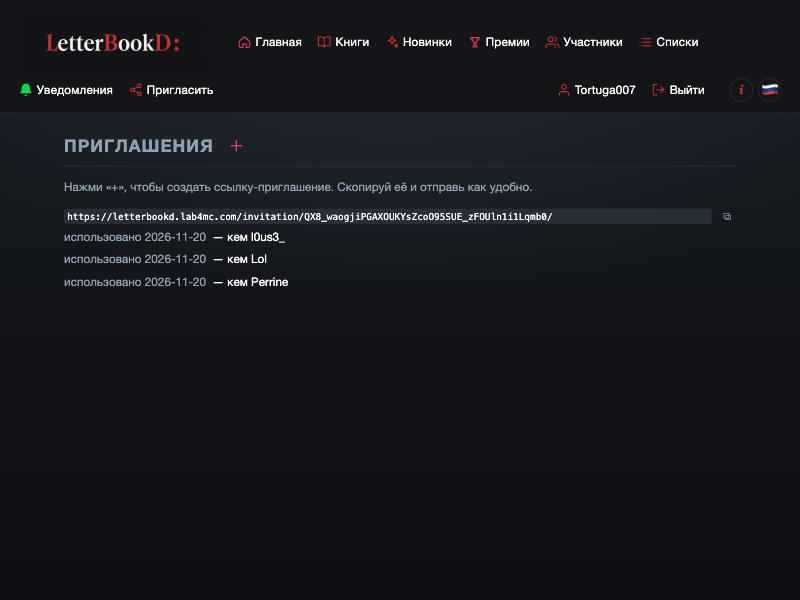

Приглашения
Зачем это нужно: Пригласить нового участника в один из твоих клубов без передачи пароля. Клик по «+» создаёт ссылку, которую можно вставить в письмо, SMS или личное сообщение: тот, кто перейдёт по ней, создаст аккаунт и вступит в клуб.

Как это устроено
Страница показывает твои существующие ссылки-приглашения: один URL в строке, со статусом («ожидает» или «использована … пользователем …»). Клик по «+» создаёт новую уникальную ссылку-приглашение. ВАЖНО: каждая новая ссылка аннулирует предыдущую неиспользованную, поэтому для безопасности одновременно активна только одна ссылка. Скопируй её значком копирования и отправь как удобно.
Цепочки действий
Каждая строка — это триггер в интерфейсе, модалка или форма, которые он открывает, и результат.
| Триггер | Модалка / Поля | Эффект |
|---|---|---|
| Кнопка «+» рядом с «Приглашения» | POST-форма без параметров. | Создаёт новую уникальную ссылку-приглашение (подписанный URL). Предыдущая активная ссылка отключается. Новая появляется в начале списка. |
| Значок «копировать» рядом с URL приглашения | — | Копирует URL в буфер обмена. Затем его можно вставить в любой инструмент. |